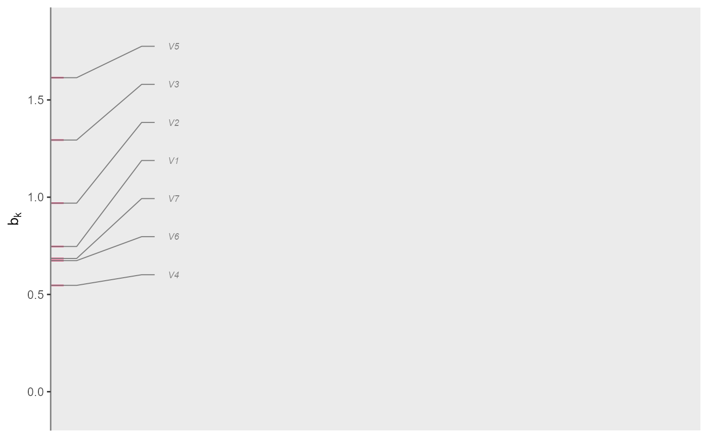
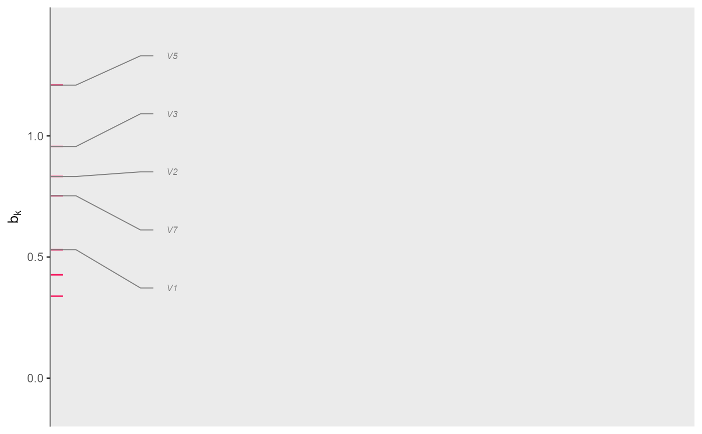
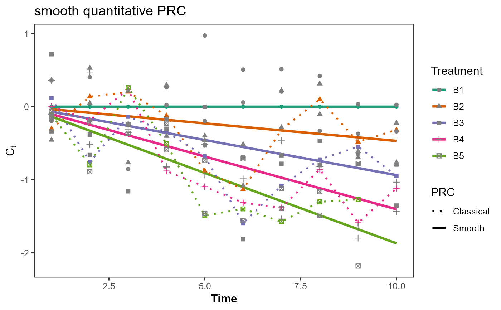
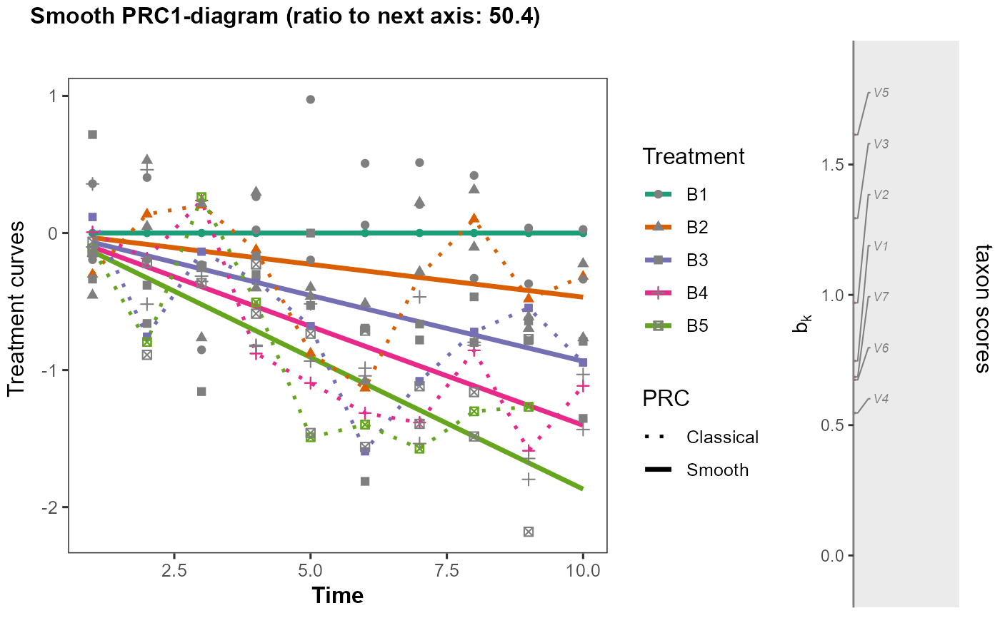
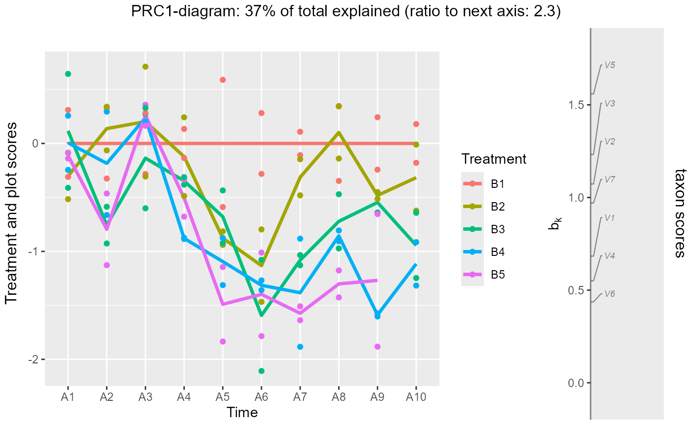
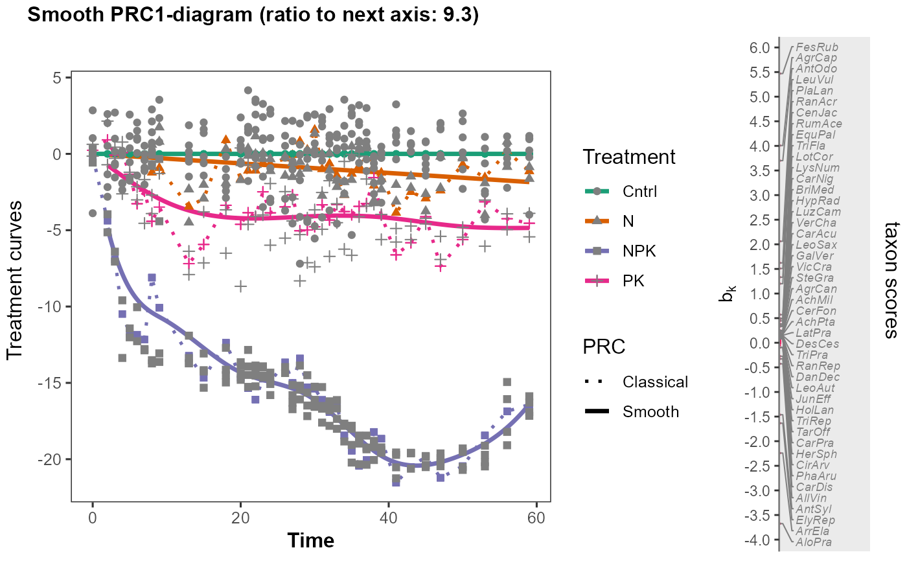

R/set_smoothPRC_model.R
set_smoothPRC_model.RdDefine the model for smooth PRC using LMMsolver (Boer 2023)
set_smoothPRC_model(
spline = NULL,
splineH0 = ~spl1D(time, nseg = 6, degree = 3, pord = 2),
fixed = Yb ~ 1,
fixedH0 = fixed,
random = NULL,
residual = NULL,
weights = NULL,
treatment.level.as.quantity = TRUE,
pord = c(time = 2, dose = 2, time.overall = 3, Treatment = 2),
nseg = c(time = 6, dose = 6),
degree = 3,
start_time = 0,
referencelevel = NULL,
scaling = "ms",
data
)A formula for the spline part of the model. Should be of the form "~ spl1D()", ~ spl2D()" or "~spl3D()". Generalized Additive Models (GAMs) can also be used, for example "~ spl1D() + spl2D()"
As spline but for the null model. Default: a one dimensional
smooth in time.
~ spl1D(time, nseg = 6, degree = 3, pord = 2)
See LMMsolve.
A formula for the fixed part of the model. Should be of the form "response ~ pred"
The default is Yb~1. Usually
equal to fixed. NB: the response variable needs to be Yb, a
variable internally generated from the abundance table Y and
loading vector that is optimized.
The default is Yb~1.
A formula for the random part of the model. Should be of the form "~ pred".
A formula for the residual part of the model. Should be of the form "~ pred".
A character string identifying the column of data to use as relative weights in the fit. Default value NULL, weights are all equal to one.
logical. Default TRUE for an
analysis using a 2d spline. If FALSE, the default spline model is
replaced by default to one containing 1d splines, one 1d-spline for each
level.
named integer vector of the difference order of the
spline penalty.
Default: c(time =2, dose= 2, time.overall= 3, Treatment = 2),
where the first two orders are used only with
treatment.level.as.quantity is TRUE
and the last two with treatment.level.as.quantity is FALSE.
named integer vector of number of segments in P-splines,
can be large.
Default c(time = 6, dose = 6).
degree of the B-splines. Default 3.
factor(data$Treatment).
numeric time of the start of the treatment application.
Default: 0.
numeric or character level(s) to be used as reference level or levels
of the focal treatment(s); default: 1 (first level(s)). With doPRC, the focal treatment is (or treatments are) given in the
resulting list at result$focal_and_conditioning_factors$`focal factor`
The default gives mean square species scores of 1, otherwise the sum of squares of the species scores is 1. See doPRC. Default: "ms".
A data.frame containing the modeling data.
An atypical aspect of the function is that the time and treatment factors
need to have the names Time and Treatment in data, i.e.
set_smoothPRC_model assumes that the data contain two factor or
character variables
Time and Treatment that can be converted to the numeric
variables time and dose, respectively, using
fvalues4levels. The values of dose are set to 0 for
negative values of time and time ==0,
after subtraction of start_time.
In this case, the default spline model is:
~ spl2D(time, dose, = c(6, 6), degree = 3, pord = 2).
To enable Treatment to be treated as a factor (instead of as a
quantitative variable), the function generates variables with
names D1, ..., Dk, with k the number of
treatments beyond the reference treatment,
if treatment.level.as.quantity is FALSE.
These variables generated in the function, contain the time
since the start of the experiment for each treatment.
D1, D2, ... should therefore not be variable names in data,
nor should time or dose be variable names
in data; these are reserved names in smoothPRC.
An example of the formula for spline
when treatment.level.as.quantity is FALSE
and the number of levels of Treatment is 4, is
spl1D(time, nseg =6, degree = 3, pord = 3)+
spl1D(D1, nseg = 6, degree = 3, pord = 2)+
spl1D(D2, nseg = 6, degree = 3, pord = 2)+
spl1D(D3, nseg = 6, degree = 3, pord = 2).
This is the default model
if treatment.level.as.quantity is FALSE.
The default spline model assumes that the Treatment factor has a quantitative
basis, so that the response to Time and Treatment can be analyzed using a
2D spline model.
Boer, Martin P. 2023. Tensor Product P-Splines Using a Sparse Mixed Model Formulation. Statistical Modelling 23 (5-6): 465–79. doi:10.1177/1471082X231178591
suppressPackageStartupMessages({
library(LMMsolver)
library(dplyr)
library(ggplot2)
library(PRC)
})
# Fig.1
# Analyze example data ----------------------------------------------------
data(SimData)
# extract design
Design0 <- SimData[,c("A","B")]
Design0$A <- factor(Design0$A); Design0$B <- factor(Design0$B)
#put levels in natural order
Design0$A<- factor(Design0$A, levels=c(levels(Design0$A)[-2],levels(Design0$A)[2]))
Y0 <- as.matrix(SimData[,-(1:3)])
ids <- which(Design0$A %in% "A10" & Design0$B %in% "B5")
#design <- "Complete" #
design <- "Empty cell"
if (design == "Complete"){ Design <- Design0;Y <- Y0} else {Design <-Design0[-ids,]; Y=Y0[-ids,]}
print(with(Design,table(A,B)))
#> B
#> A B1 B2 B3 B4 B5
#> A1 2 2 2 2 2
#> A2 2 2 2 2 2
#> A3 2 2 2 2 2
#> A4 2 2 2 2 2
#> A5 2 2 2 2 2
#> A6 2 2 2 2 2
#> A7 2 2 2 2 2
#> A8 2 2 2 2 2
#> A9 2 2 2 2 2
#> A10 2 2 2 2 0
names(Design)
#> [1] "A" "B"
# Design and Y for Fig 1 of ter Braak 2023 ready -------------------------------------------
dim(Y)
#> [1] 98 7
str(Design)
#> tibble [98 × 2] (S3: tbl_df/tbl/data.frame)
#> $ A: Factor w/ 10 levels "A1","A2","A3",..: 1 2 3 4 5 6 7 8 9 10 ...
#> $ B: Factor w/ 5 levels "B1","B2","B3",..: 1 1 1 1 1 1 1 1 1 1 ...
names(Design) <- c("Time","Treatment")
mod_prc <- doPRC(Y ~ Treatment:Time + Condition(Time), data = Design)
#>
#> Some constraints or conditions were aliased because they were redundant. This
#> can happen if terms are constant or linearly dependent (collinear):
#> 'TreatmentB5:TimeA1', 'TreatmentB5:TimeA2', 'TreatmentB5:TimeA3',
#> 'TreatmentB5:TimeA4', 'TreatmentB5:TimeA5', 'TreatmentB5:TimeA6',
#> 'TreatmentB5:TimeA7', 'TreatmentB5:TimeA8', 'TreatmentB5:TimeA9',
#> 'TreatmentB4:TimeA10', 'TreatmentB5:TimeA10'
#Mod_prc <- vegan::prc(Y, Design$Treatment,Design$Time)
#Mod_prc$CCA$eig# identical to doPRC
b_mod_prc <- vegan::scores(mod_prc,choices= 1, display = "sp")
x_mod_prc <- vegan::scores(mod_prc,choices= 1, display = "lc")
summary(mod_prc)
#>
#> Call:
#> rda(formula = Y ~ Treatment:Time + Condition(Time), data = data, scale = scale)
#>
#> Partitioning of variance:
#> Inertia Proportion
#> Total 11.388 1.0000
#> Conditioned 3.688 0.3239
#> Constrained 3.950 0.3469
#> Unconstrained 3.749 0.3292
#>
#> Eigenvalues, and their contribution to the variance
#> after removing the contribution of conditiniong variables
#>
#> Importance of components:
#> RDA1 RDA2 RDA3 RDA4 RDA5 RDA6 RDA7
#> Eigenvalue 1.4439 0.63028 0.49627 0.45841 0.41214 0.33026 0.17910
#> Proportion Explained 0.1875 0.08186 0.06445 0.05954 0.05353 0.04289 0.02326
#> Cumulative Proportion 0.1875 0.26939 0.33385 0.39338 0.44691 0.48980 0.51307
#> PC1 PC2 PC3 PC4 PC5 PC6 PC7
#> Eigenvalue 0.9464 0.67520 0.62118 0.48580 0.40184 0.33238 0.2864
#> Proportion Explained 0.1229 0.08769 0.08068 0.06309 0.05219 0.04317 0.0372
#> Cumulative Proportion 0.6360 0.72367 0.80435 0.86744 0.91963 0.96280 1.0000
#>
#> Accumulated constrained eigenvalues
#> Importance of components:
#> RDA1 RDA2 RDA3 RDA4 RDA5 RDA6 RDA7
#> Eigenvalue 1.4439 0.6303 0.4963 0.4584 0.4121 0.3303 0.17910
#> Proportion Explained 0.3655 0.1595 0.1256 0.1160 0.1043 0.0836 0.04534
#> Cumulative Proportion 0.3655 0.5251 0.6507 0.7667 0.8711 0.9547 1.00000
#>
smoothPRC_model <- set_smoothPRC_model(data = Design)
smoothPRC_model$spline
#> ~spl2D(time, dose, nseg = c(6, 6), degree = 3, pord = 2)
#> <environment: 0x000002881d372178>
smooth_PRC <- smoothPRC(Y, lmm_model = smoothPRC_model)
summary(smooth_PRC$obj)
#> Length Class Mode
#> axis1 32 LMMsolve list
#> axis2 32 LMMsolve list
(cc <- cor(smooth_PRC$B[,1], b_mod_prc))
#> RDA1
#> [1,] -0.915003
plot_species_scores_bk(-smooth_PRC$B, scoresname = "B1")
#> 7 species with names out of 7 species

plot_species_scores_bk(b_mod_prc)
#> 5 species with names out of 7 species

plot_smoothPRC_cdt(smooth_PRC, flip= TRUE)

plotsmoothPRC(smooth_PRC, flip= TRUE,threshold = 0)
#> 7 species with names out of 7 species

# Demonstration of the fitted model
x1 <- scale(as.numeric(Design$Time))[,1]
x2 <- scale(as.numeric(Design$Treatment))[,1]
# with the scaling to mean square of 1 of the species scores b
summary(lm(smooth_PRC$X[,1]~ x1+ x2+ x1:x2 )) # R^2 ~1!
#>
#> Call:
#> lm(formula = smooth_PRC$X[, 1] ~ x1 + x2 + x1:x2)
#>
#> Residuals:
#> Min 1Q Median 3Q Max
#> -0.0011256 -0.0006705 0.0002666 0.0004236 0.0011528
#>
#> Coefficients:
#> Estimate Std. Error t value Pr(>|t|)
#> (Intercept) 9.029e-03 6.941e-05 130.1 <2e-16 ***
#> x1 2.555e-02 6.985e-05 365.8 <2e-16 ***
#> x2 3.463e-01 6.982e-05 4960.4 <2e-16 ***
#> x1:x2 1.926e-01 7.160e-05 2689.7 <2e-16 ***
#> ---
#> Signif. codes: 0 '***' 0.001 '**' 0.01 '*' 0.05 '.' 0.1 ' ' 1
#>
#> Residual standard error: 0.0006863 on 94 degrees of freedom
#> Multiple R-squared: 1, Adjusted R-squared: 1
#> F-statistic: 1.028e+07 on 3 and 94 DF, p-value: < 2.2e-16
#>
plotPRC(mod_prc)
#> The analysis is based on model
#> Y~Treatment:Time + Condition(Time)
#> The current score, condition and treatment(s) are:
#> score (y-axis): PRC1
#> condition (x-axis): Time
#> treatments (color ): Treatment
#> Set these arguments yourself if you wish otherwise.
#> 7 species with names out of 7 species

## ---- Packages ----
suppressPackageStartupMessages({
library(LMMsolver)
library(dplyr)
library(ggplot2)
library(PRC)
})
data("Ossenkampen")
names(Ossenkampen)[4:5]
#> [1] "A" "B"
names(Ossenkampen)[4:5] <- c("Time", "Treatment")
test <- FALSE
if (test){
years <- sort(unique(Ossenkampen$Time))
years<- years[c(-(1:9))]
years <- years[-which(years%in% c(1984))]
years
ids <- which(Ossenkampen$Time %in% years)
}else ids <- 1:nrow(Ossenkampen)
Y <- Ossenkampen[ids,-(1:5)]
Design <- Ossenkampen[ids,1:5]
Design$Block <- factor(Design$Block)
# in doPRC Time must be a factor, not a quantative variable
Design$Time <- factor(Design$Time)
with(Design,table(Time,Treatment))
#> Treatment
#> Time Cntrl N NPK PK
#> 1958 6 0 2 2
#> 1960 6 0 2 2
#> 1961 6 0 2 2
#> 1962 6 0 2 2
#> 1963 6 0 2 2
#> 1964 6 0 2 2
#> 1965 6 0 2 2
#> 1966 6 2 4 2
#> 1967 3 2 4 1
#> 1971 6 2 4 2
#> 1973 6 2 4 2
#> 1976 6 2 4 2
#> 1978 6 2 4 2
#> 1979 6 2 4 2
#> 1980 6 2 4 2
#> 1981 6 2 4 2
#> 1982 6 2 4 2
#> 1984 6 2 2 2
#> 1985 6 2 4 2
#> 1986 6 2 4 2
#> 1987 6 2 4 2
#> 1988 6 2 4 2
#> 1989 6 2 4 2
#> 1990 6 2 4 2
#> 1991 6 2 4 2
#> 1992 6 2 4 2
#> 1993 6 2 4 2
#> 1994 6 2 4 2
#> 1995 6 2 4 2
#> 1996 6 2 4 2
#> 1997 6 2 4 2
#> 1999 6 2 4 2
#> 2001 6 2 4 2
#> 2003 6 2 4 2
#> 2005 6 2 4 2
#> 2008 6 2 4 2
#> 2011 6 2 4 2
#> 2014 6 2 4 2
#> 2017 6 2 4 2
# unbalanced!!! if test <- FALSE
mod_prc <- doPRC(Y ~ Time:Treatment + Condition(Time+Block), data = Design)
#>
#> Some constraints or conditions were aliased because they were redundant. This
#> can happen if terms are constant or linearly dependent (collinear):
#> 'Time1958:TreatmentN', 'Time1960:TreatmentN', 'Time1961:TreatmentN',
#> 'Time1962:TreatmentN', 'Time1963:TreatmentN', 'Time1964:TreatmentN',
#> 'Time1965:TreatmentN', 'Time1958:TreatmentPK', 'Time1960:TreatmentPK',
#> 'Time1961:TreatmentPK', 'Time1962:TreatmentPK', 'Time1963:TreatmentPK',
#> 'Time1964:TreatmentPK', 'Time1965:TreatmentPK', 'Time1966:TreatmentPK',
#> 'Time1967:TreatmentPK', 'Time1971:TreatmentPK', 'Time1973:TreatmentPK',
#> 'Time1976:TreatmentPK', 'Time1978:TreatmentPK', 'Time1979:TreatmentPK',
#> 'Time1980:TreatmentPK', 'Time1981:TreatmentPK', 'Time1982:TreatmentPK',
#> 'Time1984:TreatmentPK', 'Time1985:TreatmentPK', 'Time1986:TreatmentPK',
#> 'Time1987:TreatmentPK', 'Time1988:TreatmentPK', 'Time1989:TreatmentPK',
#> 'Time1990:TreatmentPK', 'Time1991:TreatmentPK', 'Time1992:TreatmentPK',
#> 'Time1993:TreatmentPK', 'Time1994:TreatmentPK', 'Time1995:TreatmentPK',
#> 'Time1996:TreatmentPK', 'Time1997:TreatmentPK', 'Time1999:TreatmentPK',
#> 'Time2001:TreatmentPK', 'Time2003:TreatmentPK', 'Time2005:TreatmentPK',
#> 'Time2008:TreatmentPK', 'Time2011:TreatmentPK', 'Time2014:TreatmentPK',
#> 'Time2017:TreatmentPK'
b_mod_prc <- vegan::scores(mod_prc,choices= 1, display = "sp")
smoothPRC_model <-
set_smoothPRC_model(fixed = Yb ~ Block, data= Design,
treatment.level.as.quantity =FALSE, start_time = 1958)
smoothPRC_model$fixed
#> Yb ~ Block
#> <environment: 0x000002881db17ca0>
smoothPRC_model$spline
#> ~spl1D(time, nseg = 6, degree = 3, pord = 3) + spl1D(D1, nseg = 6,
#> degree = 3, pord = 2) + spl1D(D2, nseg = 6, degree = 3, pord = 2) +
#> spl1D(D3, nseg = 6, degree = 3, pord = 2)
#> <environment: 0x000002881ba8bd80>
smooth_PRC <- smoothPRC(Y, lmm_model = smoothPRC_model)
summary(smooth_PRC$obj)
#> Length Class Mode
#> axis1 32 LMMsolve list
#> axis2 32 LMMsolve list
cor(smooth_PRC$B[,1], b_mod_prc)
#> RDA1
#> [1,] -0.9999544
plotsmoothPRC(smooth_PRC, flip = TRUE, threshold = 1)
#> 46 species with names out of 98 species
